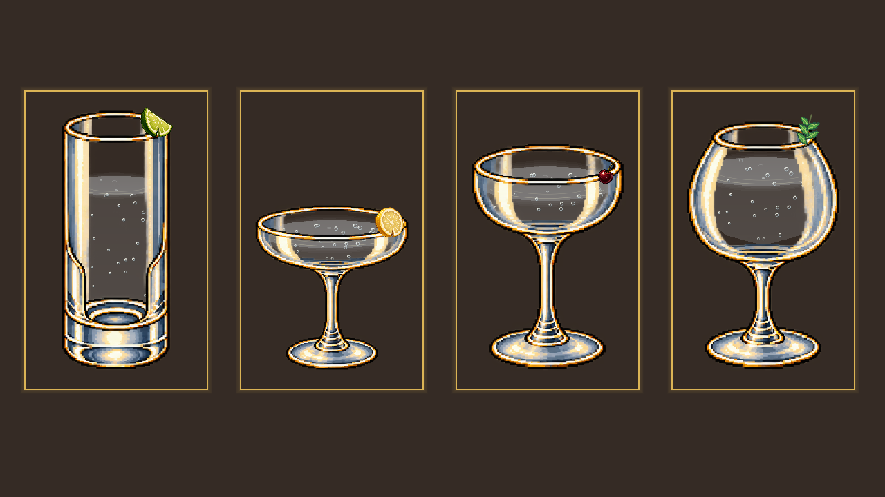

已接入 Godot。囚犯修正裁切并保持比例；青柠角、柠檬片和樱桃采用单体像素素材，装饰按杯口大小摆放，并随杯子倾斜。

四种装饰与不同杯型
囚犯原裁切包含了小船左侧，显示时又被压入人物框。现在只裁人物，岸边、船上、拖动统一按比例缩放。
青柠原图是整果和切角的组合，柠檬、樱桃也被统一拉成方形。现在使用单块青柠角、带切口的柠檬轮片、小颗深红樱桃；保留薄荷叶的弯曲和捣碎系统，调整薄荷枝在杯沿的尺寸和落点。库存、备料柜、成品预览共用对应单体图，不改配方与扣料规则。
验证：图形检查 11 项通过，无窗口检查 10 项通过。包括拖动囚犯上船、11 趟过河解法、每种装饰扣一份库存、渲染不改制作数据。检查了四种杯型及倾斜时的画面。
截图来自临时测试存档。最终运行无 GDScript 报错，退出仍有此前同类资源清理警告，日志保留。首次图形运行未完成；一次后台窗口触发游戏失焦暂停，恢复前台后完整重跑通过。